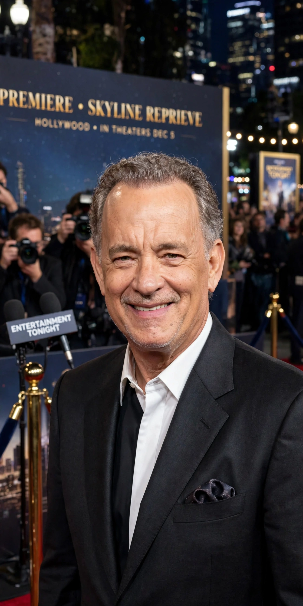

Thomas Jeffrey Hanks (born July 9, 1956) is an American actor and filmmaker. Known for both his comedic and dramatic roles, he is one of the most popular and recognizable film stars worldwide, and is regarded as an American cultural icon. Hanks's films have grossed more than $4.9 billion in North America and more than $9.96 billion worldwide, making him the fifth-highest-grossing actor in North America.

| Tom Hanks | |
|---|---|
| Born | July 9, 1956, Concord, California, U.S. |
| Occupation | Actor, filmmaker |
| Years active | 1977–present |
| Spouses | Samantha Lewes (m. 1978; div. 1987); Rita Wilson (m. 1988) |
| Children | 4, including Colin Hanks |
| Awards | 2 Academy Awards for Best Actor |
Hanks was born in Concord, California, to hospital cook Janet Marylyn and itinerant chef Amos "Bud" Hanks. After his parents divorced in 1960, he lived with a succession of stepfamilies. He studied theatre at Chabot College and California State University, Sacramento, and began acting with the Great Lakes Theater Festival in Cleveland.
Hanks gained notice in the sitcom Bosom Buddies (1980–82) and broke through in film with Splash (1984) and Big (1988). He won consecutive Academy Awards for Best Actor for Philadelphia (1993) and Forrest Gump (1994). He starred in Apollo 13 (1995), voiced Woody in Pixar's Toy Story films, and led Saving Private Ryan (1998), Cast Away (2000), Captain Phillips (2013) and Sully (2016). With Steven Spielberg he produced the acclaimed miniseries Band of Brothers and The Pacific.
Hanks received the AFI Life Achievement Award in 2002, the Presidential Medal of Freedom from Barack Obama in 2016, and the Cecil B. DeMille Award in 2020. He is also known for his collection of vintage typewriters and, in 2023, published the novel The Making of Another Major Motion Picture Masterpiece.
See also: Forrest Gump · Steven Spielberg · Playtone